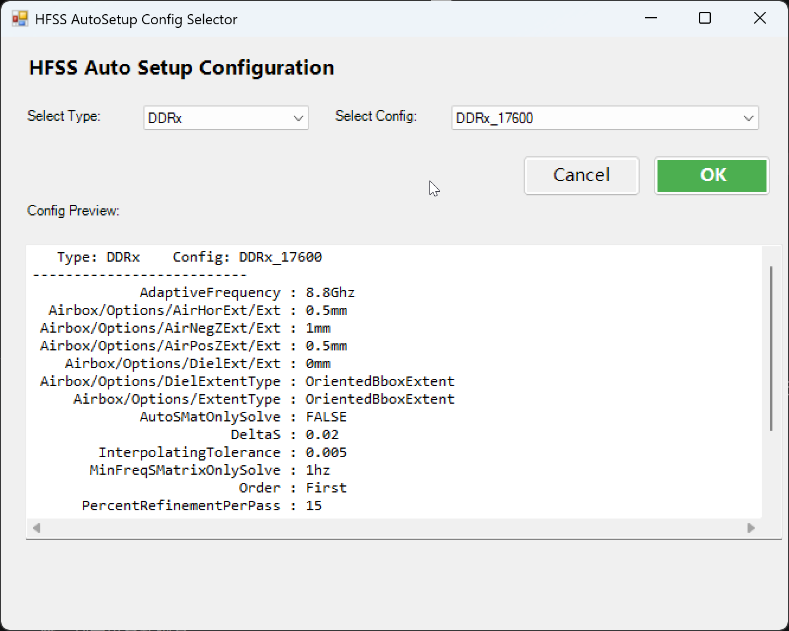

HfssAutoSetupGUI
功能概述
HfssAutoSetupGUI 是一个面向 AEDT 3D Layout / HFSS Layout 工作流的图形化配置选择工具。它通过读取脚本目录下 config 文件夹中的 CSV 模板，让用户先选择业务类型，再选择具体配置档，最后自动把对应的 HFSS 求解设置和 Airbox 参数应用到当前设计。
这个工具的目标不是手工逐项填写 Setup，而是把常用仿真配置模板化，减少重复配置时间，并保证团队内部的设置口径一致。
适用场景
- 为 SerDes、DDRx 等高速通道快速套用标准 HFSS Setup
- 统一 sweep 范围、收敛策略、Airbox 尺寸等常见参数
- 降低手动建 Setup 时的遗漏和配置差异
菜单位置
3DLayout -> Setup -> HfssAutoSetupGUI
对应菜单配置如下：
<SubMenu Type="MenuItem"
Name="HfssAutoSetupGUI"
ExecuteType="Python"
Path="$UserLib/3DLayout/Setup/HfssAutoSetupGUI.py"
Arguments=""
PythonPath=""></SubMenu>
工具位置
工具位于 Toolbox 安装目录下：
Toolbox安装目录/
├── UserLib/
│ └── 3DLayout/
│ └── Setup/
│ ├── HfssAutoSetupGUI.py （GUI 主程序）
│ ├── autoSetup.py （自动设置执行逻辑）
│ └── config/
│ ├── DDRx.csv
│ └── Serdes.csv
└── ...
界面说明
启动工具后会弹出一个 Windows Forms 窗口，主要由以下区域组成：
- Select Type: 选择配置类别，对应
config目录下的 CSV 文件名 - Select Config: 选择该类别下的具体配置名，对应 CSV 第一行中的配置列
- Config Preview: 预览当前配置的键值内容
- OK: 将当前配置应用到设计
- Cancel: 关闭窗口，不执行任何操作

当前已识别的配置类型
根据现有脚本目录，工具默认可加载以下类型：
SerdesDDRx
如果后续在 config 目录增加新的 CSV 文件，工具会自动把文件名加入 Select Type 下拉框，无需额外修改 GUI 代码。
输入与输出
输入来源
工具不要求用户手动输入仿真参数，所有参数都来自 CSV 配置模板。
CSV 的组织方式如下：
- 第一行定义配置名称列表
- 第一列定义参数键名
- 其余单元格定义每个配置对应的参数值
例如：
Setup/NameSolutionTypeAdaptiveFrequencyOrderDeltaSSetup/Sweep/NameSweepTypeInterpolatingToleranceSweepDataUseQ3DForDCAirbox/Options/AirHorExt/Ext
输出结果
点击 OK 后，工具会把当前选中的配置转换成参数字典，并传给 HfssAutoSetup(data).run() 执行。脚本的实际输出包括：
- 初始化当前 AEDT 布局设计上下文
- 应用 HFSS 求解设置
- 应用频率扫描设置
- 应用 Airbox 设置
- 关闭窗口并提示执行完成
操作流程
用户操作步骤
- 确保当前打开的是可用于 HFSS 分析的 3D Layout 设计
- 在 Toolbox 菜单中启动
HfssAutoSetupGUI - 在 Select Type 中选择业务类型，例如
Serdes或DDRx - 在 Select Config 中选择目标配置，例如某个速率档位
- 在 Config Preview 中确认将要写入的参数
- 点击 OK 应用配置
执行流程
启动 HfssAutoSetupGUI
↓
扫描 config 目录中的 CSV 文件
↓
填充 Select Type 下拉框
↓
根据所选类型读取 CSV 表头
↓
填充 Select Config 下拉框
↓
解析所选配置列为参数字典
↓
在预览区显示配置内容
↓
点击 OK
↓
调用 HfssAutoSetup(data)
↓
初始化当前 Layout 设计
↓
执行 solveSetup()
↓
执行 setAirbox()
↓
完成自动设置
配置模板说明
Serdes.csv
Serdes.csv 中提供了一组按速率区分的 SerDes 仿真模板，例如：
SERDES_8GSERDES_16GSERDES_25GSERDES_32GSERDES_56GSERDES_112GSERDES_224GSERDES_448G
这些模板通常会预设：
- 多个自适应频点
- 插值型 Sweep
- 高频范围下的线性采样步长
- 固定的 Airbox 水平和上下延展量
DDRx.csv
DDRx.csv 中提供了一组 DDR 相关模板，例如：
DDRx_3200DDRx_6400DDRx_10700DDRx_17600
这类模板通常会根据速率档位调整：
- 自适应频率
- Sweep 终止频率
- Basis Order
- 是否启用
UseQ3DForDC
预览区说明
预览区会把当前配置按 键 : 值 的形式显示出来，便于在执行前确认。
显示规则如下：
- 顶部显示当前
Type和Config - 后续按键名排序显示所有可用参数
- 仅展示当前配置列中有值的项目
这意味着如果某个参数在该配置列为空，它不会被写入当前配置字典，也不会显示在预览区。
实际计算流程
HfssAutoSetupGUI.py 本身主要负责界面和 CSV 解析，真正执行设置的是 autoSetup.py 中的 HfssAutoSetup 类。
根据当前脚本实现，run() 的有效执行步骤主要包括：
- 初始化
Layout()并绑定当前设计 - 调用
solveSetup()写入求解设置与扫频设置 - 调用
setAirbox()写入 Airbox 参数
脚本中还保留了若干被注释掉的扩展流程，例如：
- Cutout
- Nets 配置
- 器件模型配置
- Backdrill
- Pin Group
- Solder Ball
- Ports
- Source
- Geometry Check
- Analyze
当前 GUI 版本默认不会自动执行这些步骤，也不会自动启动求解。
注意事项
- 该工具依赖
config目录下的 CSV 文件，若目录不存在或为空，界面将无法加载配置项 - 工具应用的是模板参数，不会自动检查这些参数是否完全适配当前板级结构
- 当前实现主要自动处理 Setup 和 Airbox，不等同于完整的一键建模与仿真流程
- 若 CSV 中使用了脚本未识别的键名，后台会记录
key not found警告 - 在执行前应确认当前活动设计已经满足 HFSS 3D Layout 分析前提条件
故障排查
| 问题 | 可能原因 | 处理建议 |
|---|---|---|
| 打开窗口后类型列表为空 | config 目录不存在或没有 CSV 文件 |
检查 UserLib/3DLayout/Setup/config/ 目录 |
| 选择类型后没有配置名 | CSV 第一行未正确填写配置名称 | 检查表头格式，确认第一行第二列开始为配置名 |
| 预览区为空 | 当前配置列没有有效键值对 | 检查 CSV 对应列是否为空 |
| 点击 OK 后报错 | 当前设计上下文不正确，或配置键不兼容 | 确认在正确的 AEDT 设计中执行，并检查 CSV 键名 |
| 设置结果与预期不一致 | 模板参数不匹配当前项目 | 在预览区确认参数后，再针对项目调整 CSV 模板 |
相关资源
- HFSS 3D Layout 相关帮助
- Toolbox 菜单配置说明:
ToolBox/AddItem.md - 相邻工具参考:
HFSS3DLayout/AutoBackdrill.md